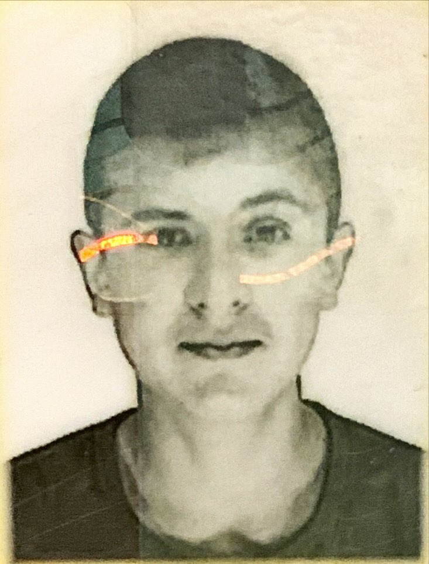

Rólam
Jelenleg a Budapesti Műszaki és Gazadaságtudományi Egyetem Gépészmérnök hallgatója vagyok. Azért jöttem ebbe az intézménybe, hogy később nagy sikreket érhessek el, és ehhez elengedhetetlennek tartom, hogy ne erre a nagy múltú egyetemre járjak. Sajnálatos módon a pandémia sok dolgot elvett az egyetemi életemből, de remélem, hogy még sok örömöt okoz nekem nagyra becsült intézményünk.
Személyes adatok/információk:
Teljes név: Bartha Bendegúz Károly
Születési hely és dátum: Kiskunhalas.2001.09.10.
Nyelvtudás:
- Angol B2
Végzettség:
Iskolák:
Kiskőrösi Petőfi Sándor Evangélikus Óvoda, Általános Iskola, Gimnázium és TechnikumElőző munkahelyek:
Korábbi tapasztalatok:
Hobbi:
Versenyszerű sport(kézilabda)